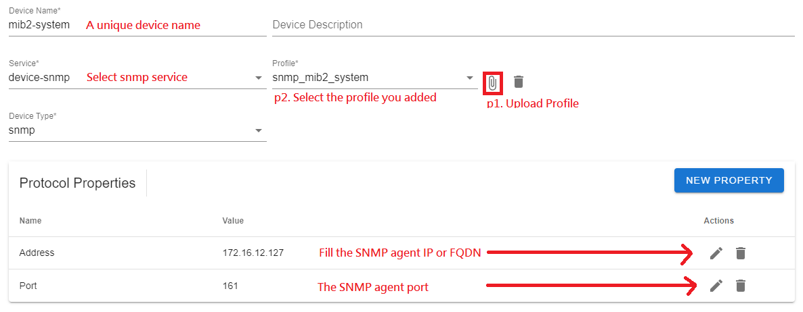

SNMP
This page describes how to connect SNMP devices to EdgeX. In this example, we take SNMP MIB-2 System (1.3.6.1.2.1.1) object to test the SNMP device service features.
SNMP MIB-2 System (1.3.6.1.2.1.1)
| OID | Name | Description |
|---|---|---|
| 1.3.6.1.2.1.1.1 | sysDescr | A textual description of the entity. |
| 1.3.6.1.2.1.1.2 | sysObjectID | The standard identification of the managed system this agent represents. |
| 1.3.6.1.2.1.1.3 | sysUpTime | The time (in hundredths of a second) since the network management portion of the system was last re-initialized. |
| 1.3.6.1.2.1.1.4 | sysContact | The textual identification of the contact person for this managed node. |
| 1.3.6.1.2.1.1.5 | sysName | An administratively-assigned name for this managed node. By convention, this is the node's fully-qualified domain name. |
| 1.3.6.1.2.1.1.6 | sysLocation | The physical location of this node. |
| 1.3.6.1.2.1.1.7 | sysServices | A value which indicates the set of services that this entity primarily offers. |
Device Profile
Create the device profile (YAML) and save it as snmp_mib2_system.yaml, as shown below:
name: "snmp_mib2_system"
manufacturer: "Advantech corp"
model: "SNMP-MIB2-SYSTEM"
labels:
- "advantech"
- "SNMP"
description: "SNMP MIB-2 System"
deviceResources:
-
name: sysDescr
description: "A textual description of the entity."
attributes:
{ oid: "1.3.6.1.2.1.1.1.0", community: "public" }
properties:
{ valueType: "String", readWrite: "R" }
-
name: sysObjectID
description: "The vendor's authoritative identification of the network management subsystem contained in the entity."
attributes:
{ oid: "1.3.6.1.2.1.1.2.0", community: "public" }
properties:
{ valueType: "String", readWrite: "R" }
-
name: sysUpTime
description: "The time (in hundredths of a second) since the network management portion of the system was last re-initialized."
attributes:
{ oid: "1.3.6.1.2.1.1.3.0", community: "public" }
properties:
{ valueType: "Int32", readWrite: "R" }
-
name: sysContact
description: "The textual identification of the contact person for this managed node, together with information on how to contact this person."
attributes:
{ oid: "1.3.6.1.2.1.1.4.0", community: "public" }
properties:
{ valueType: "String", readWrite: "R" }
-
name: Set-sysContact
description: "The textual identification of the contact person for this managed node, together with information on how to contact this person."
attributes:
{ oid: "1.3.6.1.2.1.1.4.0", community: "private" }
properties:
{ valueType: "String", readWrite: "W" }
-
name: sysName
description: "An administratively-assigned name for this managed node. By convention, this is the node's fully-qualified domain name."
attributes:
{ oid: "1.3.6.1.2.1.1.5.0", community: "public" }
properties:
{ valueType: "String", readWrite: "R" }
-
name: Set-sysName
description: "An administratively-assigned name for this managed node. By convention, this is the node's fully-qualified domain name."
attributes:
{ oid: "1.3.6.1.2.1.1.5.0", community: "private" }
properties:
{ valueType: "String", readWrite: "W" }
-
name: sysLocation
description: "The physical location of this node."
attributes:
{ oid: "1.3.6.1.2.1.1.6.0", community: "public" }
properties:
{ valueType: "String", readWrite: "R" }
-
name: Set-sysLocation
description: "The physical location of this node."
attributes:
{ oid: "1.3.6.1.2.1.1.6.0", community: "private" }
properties:
{ valueType: "String", readWrite: "W" }
-
name: sysServices
description: "A value which indicates the set of services that this entity primarily offers."
attributes:
{ oid: "1.3.6.1.2.1.1.7.0", community: "public" }
properties:
{ valueType: "String", readWrite: "R" }
In the SNMP protocol, EdgeX provide the following attributes:
1.oid: The SNMP OID end with .0 if the target oid is not a table entry. for example, sysDescr.0 (1.3.6.1.2.1.1.1.0); if the target oid is a table entry oid, for example, ifIndex (1.3.6.1.2.1.2.2.1.1), you don't need to give the ending .0.
2.community: The SNMP community.
isTableEntry: Indicates the oid is a table entry oid, it will returns an array containing all the values. Default isfalse.dataTypeThe SNMP service will process the OCTET STRING (data bytes) into the corresponding data type. If thedataTypeis not specified, the SNMP service will determine the data bytes, if the data contains any non-printable bytes, the SNMP service will return an hexadecimal encoding string. For example: 00 01 02 (Hex).
The supported dataType :
OctetString Convert the incoming bytes to an hexadecimal encoding string. For example: 00 01 02 (Hex).
DateAndTime DateAndTime is a standard Textual Convention which is defined in the SNMPv2-TC. DateAndTime is resolved to base data type OCTET STRING. The DISPLAY-HINT format for DataAndTime is given as follows.
| field | octets | contents | range |
|---|---|---|---|
| 1 | 1-2 | year | 0..65536 |
| 2 | 3 | month | 1..12 |
| 3 | 4 | day | 1..31 |
| 4 | 5 | hour | 0..23 |
| 5 | 6 | minutes | 0..59 |
| 6 | 7 | seconds | 0..60 |
| 7 | 8 | deci-seconds | 0..9 |
| 8 | 9 | direction from UTC | '+' / '-' |
| 9 | 10 | hours from UTC | 0..11 |
| 10 | 11 | minutes from UTC | 0..59 |
PhysAddress
PhysAddress to represent media- or physical-level addresses. PhysAddress is resolved to base data type OCTET STRING. The format for PhysAddress is given as follows. 00:11:22:33:44:55
Profile including both table entries and non-table entries. You can use a deviceCommands to include all the table entries.
...
deviceResources:
-
name: ifNumber
attributes:
{ oid: "1.3.6.1.2.1.2.1.0", community: "public" }
properties:
{ valueType: "Int32", readWrite: "R" }
-
name: ifIndex
isHidden: true
attributes:
{ oid: "1.3.6.1.2.1.2.2.1.1", community: "public", isTableEntry: true }
properties:
{ valueType: "Int32Array", readWrite: "R" }
-
name: ifDescr
isHidden: true
attributes:
{ oid: "1.3.6.1.2.1.2.2.1.2", community: "public", isTableEntry: true }
properties:
{ valueType: "StringArray", readWrite: "R" }
...
-
name: ifPhysAddress
isHidden: true
attributes:
{ oid: ".1.3.6.1.2.1.2.2.1.6", community: "public", isTableEntry: true, dataType: "PhysAddress" }
properties:
{ valueType: "StringArray", readWrite: "R" }
...
deviceCommands:
-
name: " ifTable"
readWrite: "R"
isHidden: false
resourceOperations:
- { deviceResource: "ifIndex" }
- { deviceResource: "ifDescr" }
...
- { deviceResource: "ifPhysAddress" }
...
For a full list of device profile fields and their required values see the device profile reference.
Add a downlink device
Navigate to EdgeX > Downlink, then click the ＋ button.

Upload device profile (snmp_mib2_system.yaml) and fill the device information.

Note: The Address of the SNMP agent should NOT be
127.0.0.1orlocalhost(loopback), it should be a valid public IP address or a reachable FQDN.Add AutoEvent
Click SAVE to save the device configuration